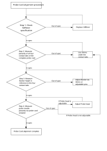

Direct Probe Card adjustment and verification procedure
Follow the below steps to adjust and verify the Direct Probe card.
Adjustment and verification procedure

Functional changes
- Introduced in SmarTest 8.3.3
Follow the below steps to adjust and verify the Direct Probe card.
